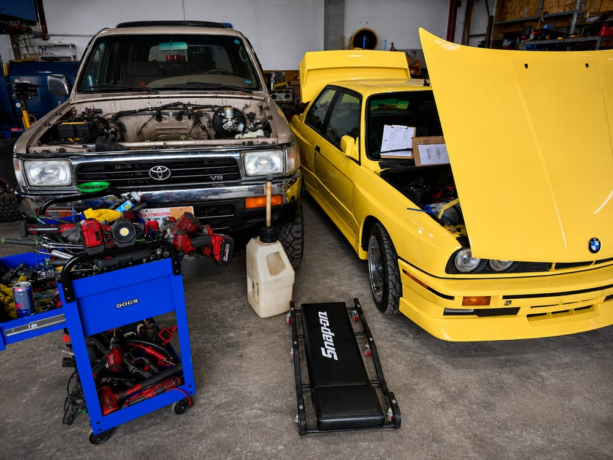

River City Autohaus is your trusted shop for auto repair in Columbia County — with the diagnosis photographed, the estimate approved by you first, and the job done when we said it would be.

Everyone's heard the horror stories about mechanics. Repairs that weren't needed, bills padded with mystery labor. Our fix for that is simple: evidence. We take pictures of what we find on your vehicle and show you exactly what's wrong before we quote anything. No needless repairs and no scare tactics, just the problem, the fix, and the price.
Photos of the actual worn or broken part on your actual car, shown to you before you approve a dime of work.
If it's under the hood or on the road, we've got it covered. One stop, no need to shop around.
The estimate you approve is the bill you pay, and the timeline we give is the one we keep.
Our team is made up of A-level technicians with the kind of hands-on expertise that usually means driving out of the county to find. You'll find it right here.
We trace problems to their actual source — not the easiest guess or the most expensive fix. If something's wrong, we find out why before we touch it.
Our technicians can disassemble, diagnose, and rebuild anything in your vehicle's engine bay. Everything happens under one roof
In-house welding capability means we handle exhaust repairs, custom work, and fabrication without sending you elsewhere.
Don't take our word for it. Read what drivers in Columbia County say about working with River City Autohaus.
"From my fun Audi TT to my Nissan Titan work truck, they are able to do it all at a reasonable price without excuses and on time. Whatever the issue, River City Autohaus is my go-to shop."
— Dean Moore, Local Guide
⭐⭐⭐⭐⭐
"These guys work FAST. In the best way possible. I needed fuel system and brake work done. I was sweating about the price, and they came in great. Fair pricing for quality work."
— Moss, Local Guide
⭐⭐⭐⭐⭐
"If I could give 10 stars I would. They went above and beyond to get my air conditioning fixed same day. It was 90 degrees and they put on a movie and gave us a fan. Amazing service."
— Jackie Newman
⭐⭐⭐⭐⭐
"Incredible service. Was passing through town and had a brutal squeak from my rear end. They fixed it in 20 minutes. Super nice guys, they didn't even want to charge me but I insisted because they're legends."
— Micah Erenberg, Local Guide
⭐⭐⭐⭐⭐
"Zack and the team are the real deal. I felt stranded and overwhelmed, and they treated me with such care and respect. They got me safely back on the road. Thank you for going above and beyond."
— Christine Lam
⭐⭐⭐⭐⭐
"These guys are able to work miracles. I would definitely recommend this shop for your auto needs. Honest and fair prices for the work performed. Always satisfied with the service."
— Nicholas Jones, Local Guide
⭐⭐⭐⭐⭐
We're a family business that lives here, so we invest here. Get to know the family behind the shop, join our free Confident Car Care Workshop, or help us give the county's foster kids an unforgettable day with our side-by-side ride program.
Call us or stop by. We'll take a look, show you what we find, and give you a clear estimate before any work begins.
Call (503) 867-0609